S0LE · São Paulo
Sol Emanuel
Calderón Vargas
Imagen, sonido y luz para activar espacios, memorias y formas de creación colectiva.
Artista audiovisual e investigador en São Paulo.
Fotografías analógicas · VIVITAR

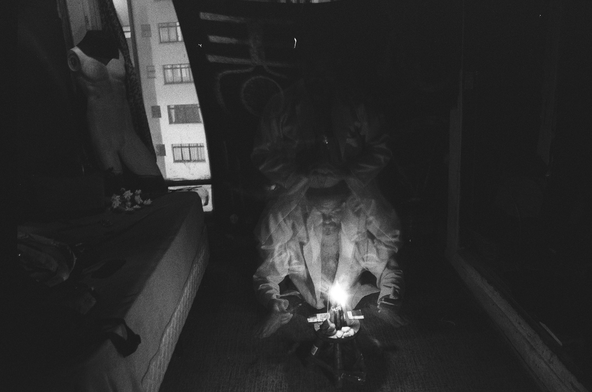

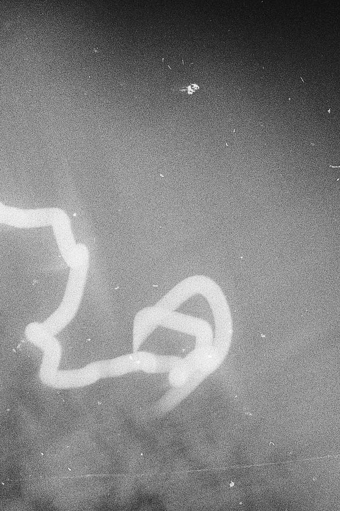

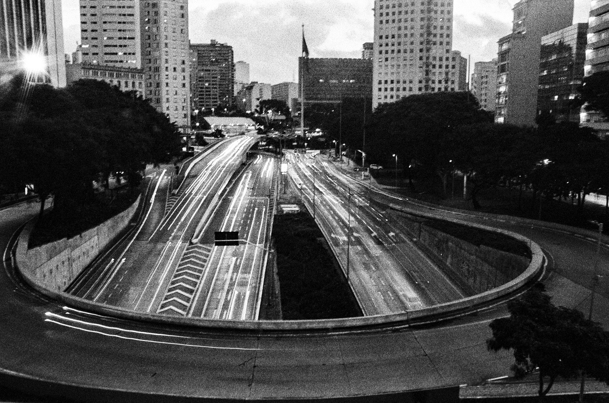

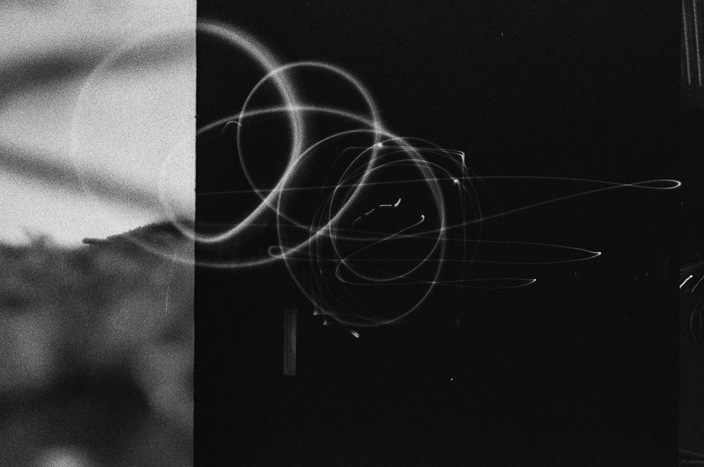

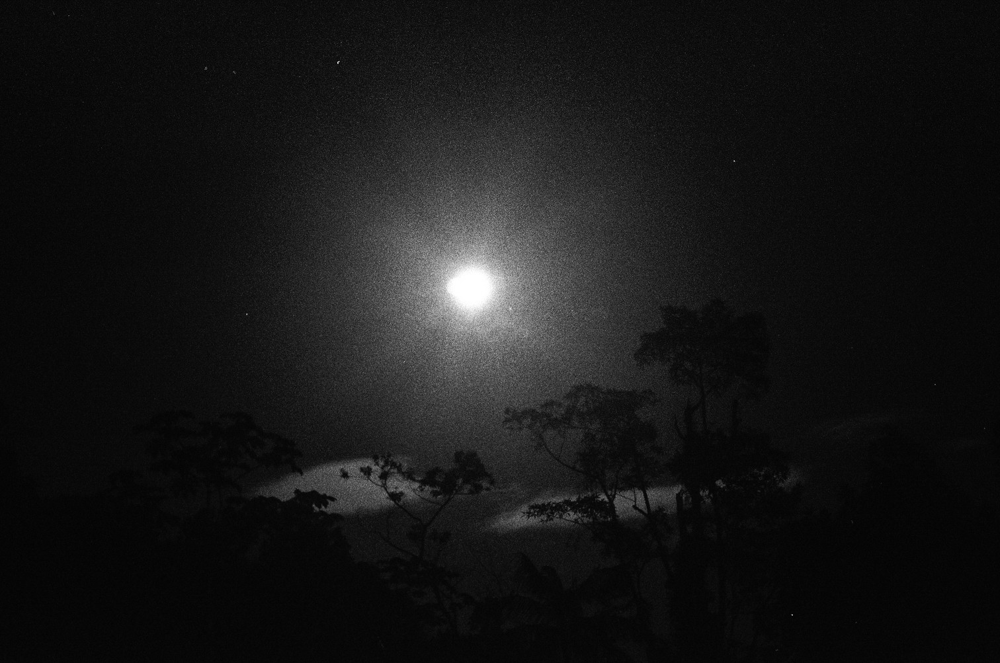

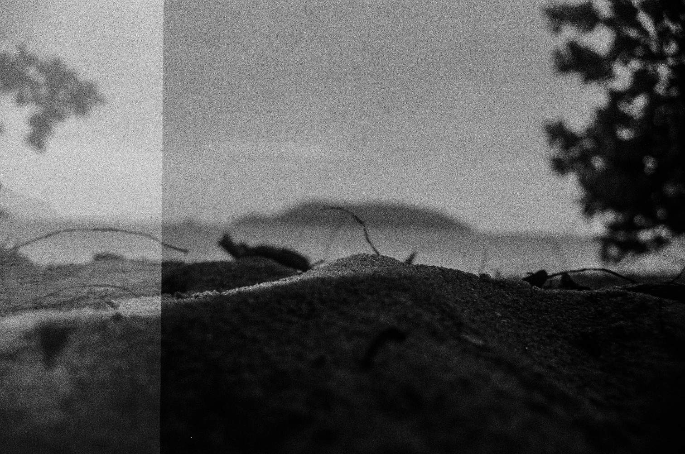

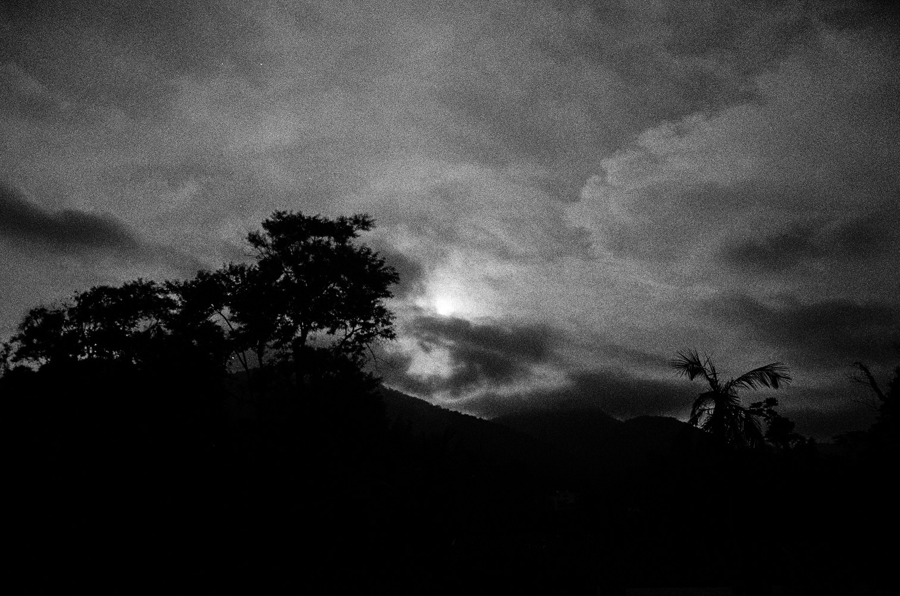

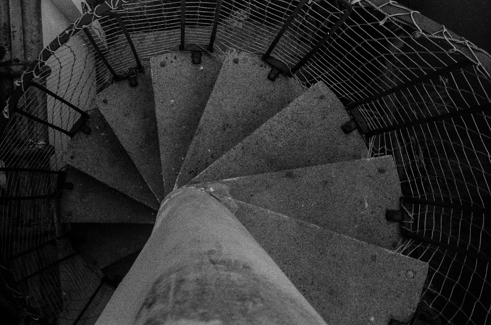

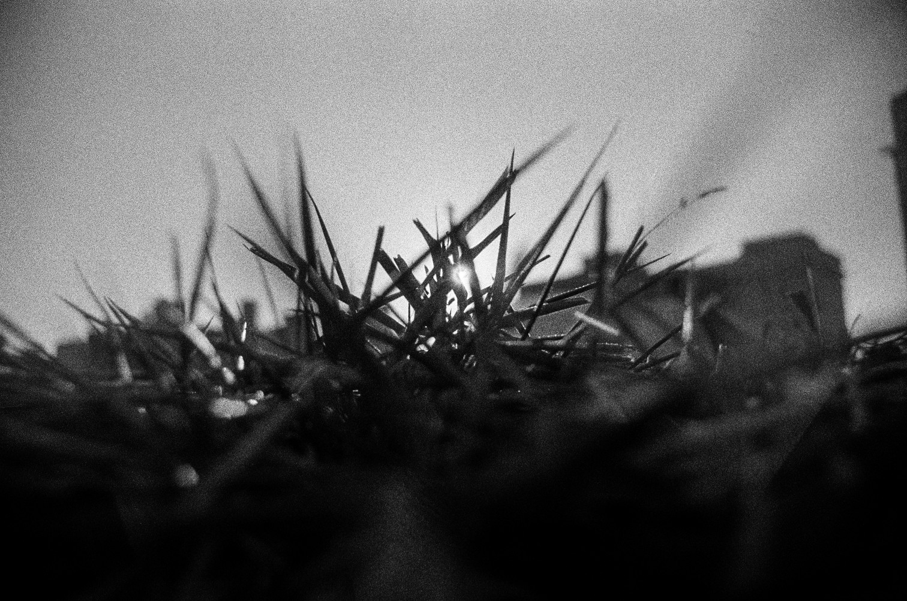

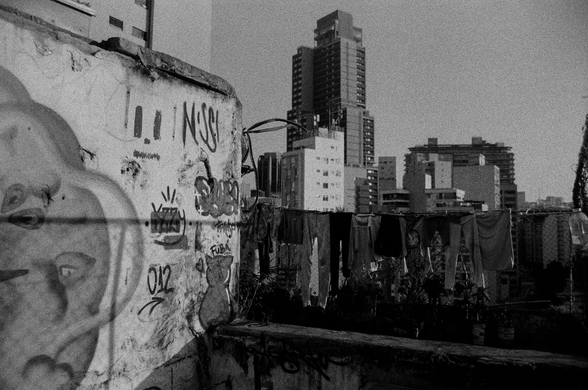
Desliza para ver otras imágenes. Haz clic para ampliar.
Sobre la serie y la técnica
Serie fotográfica
Fotografías hechas en película: grano, luz y un tiempo que no se corrige después.
Fotografío en película con una cámara VIVITAR. La serie pasa por el grano, la luz y el blanco y negro.
- Técnica
- Fotografía analógica en película
- Cámara
- VIVITAR
S0LE · VISUAL EN VIVO
Geometría en expansión
Mueve los controles; el sonido transforma la imagen cuando el micrófono está activo.
Luz que responde a ti.
Toca o mueve el cursor. El sonido y la inclinación también transforman este pequeño ambiente.
Toca para crear una mancha; arrastra horizontalmente para pintar. Desliza verticalmente para desplazarte. Teclado: las flechas mueven, Enter pinta.
Micrófono apagado.
Movimiento apagado.
01 · Práctica
Trabajo
Proyección mapeada, registro, escenografía, aplicaciones y fotografía. Abre cada trabajo para conocer el contexto.
Ouvidor 63
Desde 2014Registros audiovisuales, proyecciones mapeadas y ambientes visuales para performances, recitales y eventos culturales, desde 2014.
En Ouvidor 63, hago registros, proyecciones mapeadas y videoinstalaciones. Trabajo con ambientes visuales para performances, recitales y eventos culturales.
- Rol
- Artista audiovisual y técnico de proyección
- Lugar
- Ouvidor 63, São Paulo
- Período
- Desde 2014
Lab 63 · 2018. Participé en la organización y facilitación de video mapping, video de 360° y actividades de artes escénicas y circo. El Laboratório Novas Mídias estuvo vinculado a la II Bienal da Ouvidor 63. El trabajo se amplió en el programa OCUPAÇÃO, de Red Bull Station.
Memorial da Resistência · 6 de diciembre de 2025. Presenté el video mapping de la escalera y dirigí y creé el video proyectado en el techo. El video reúne actividades de los artistas de Ouvidor 63. Fue una extensión de la investigación apoyada por FAPESP.

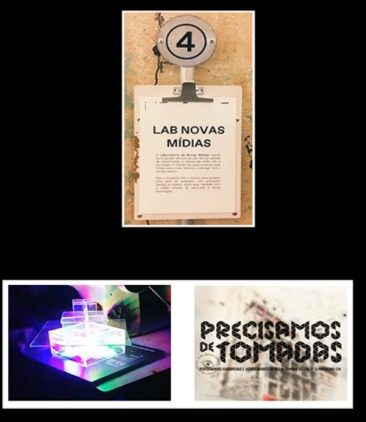

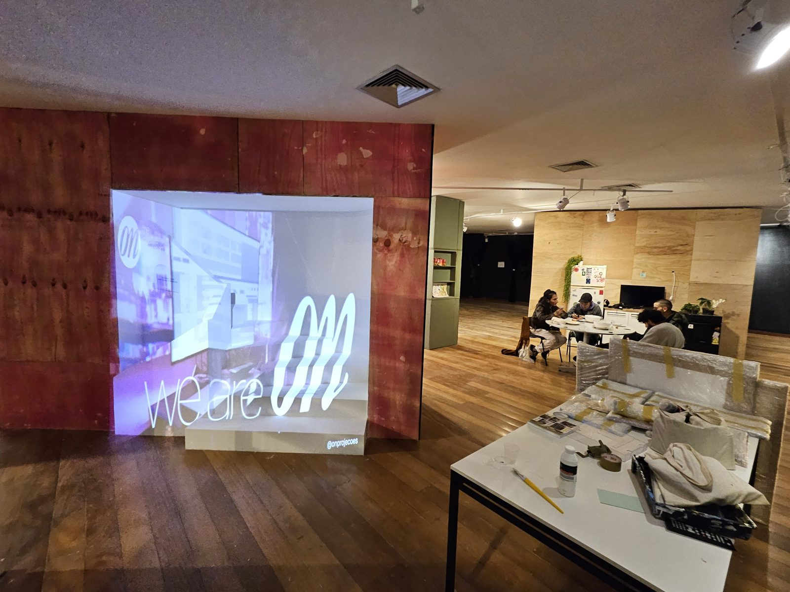

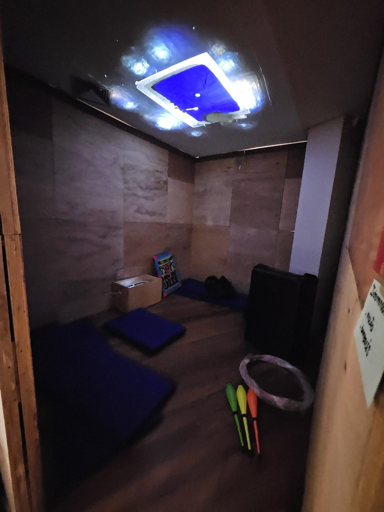
Sucata Quântica
Desde 2019Escenografías, diseños expositivos y dispositivos de luz con materiales reutilizados y tecnologías alternativas.
En Sucata Quântica, creo escenografías, diseños expositivos y dispositivos de iluminación. Imparto talleres de upcycling en el SESC y en organizaciones sociales.
- Rol
- Escenografía, diseño expositivo, iluminación y talleres
- Colectivo
- Sucata Quântica
- Período
- Desde 2019

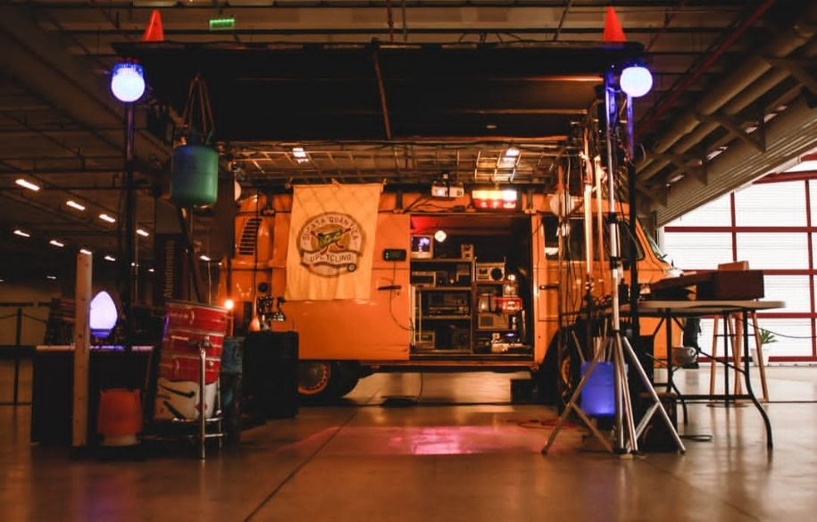
Oficina Microcidades · MASP
18 abr 2026Construcción de microciudades con material reutilizado, con Sucata Quântica.
Participé en la Oficina Microcidades con Sucata Quântica. La actividad tuvo lugar en el Vão Livre do MASP, en São Paulo.
- Fecha
- 18 de abril de 2026, 15h–17h
- Lugar
- Vão Livre do MASP, São Paulo
- Colectivo
- Sucata Quântica

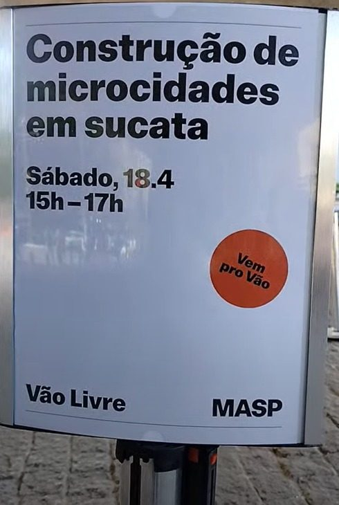

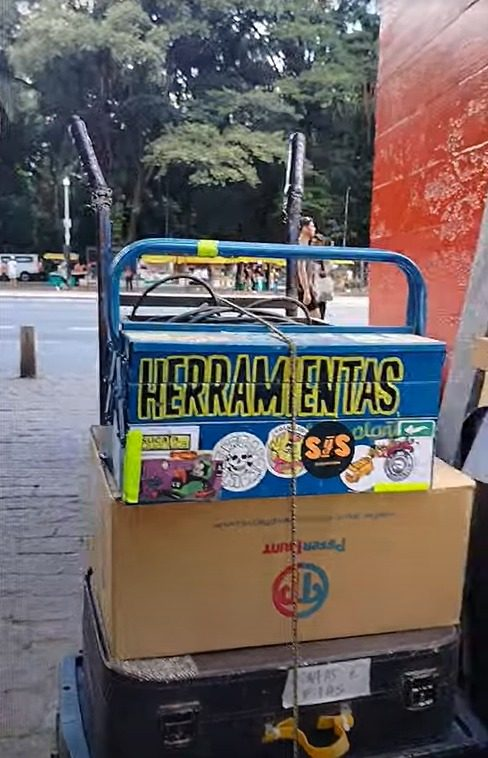

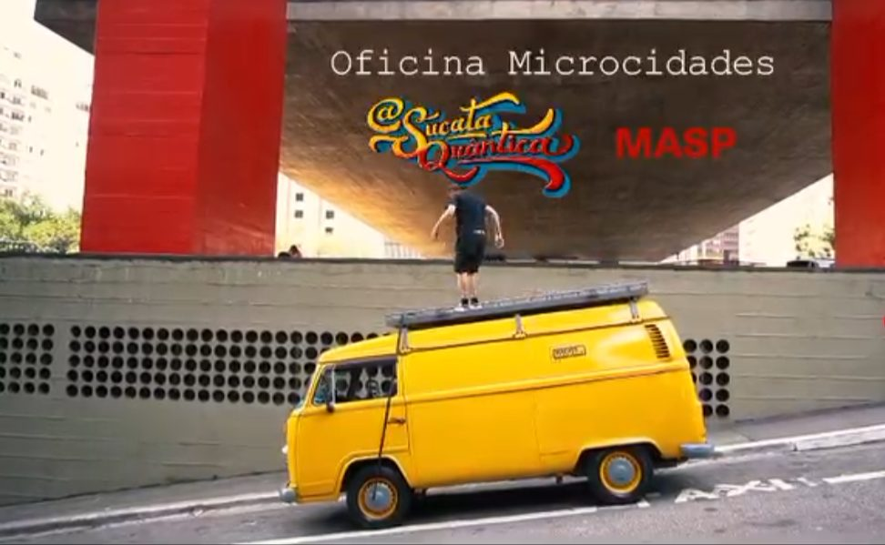
Aplicaciones interactivas
Proyectos webReúno aquí mis experiencias digitales para abrirlas en el navegador.
Las aplicaciones interactivas de este portafolio, reunidas en un solo lugar para abrirlas cuando quieras.
v1su4rt · ESF-01
Experimento webShader interactivo de pigmento digital con puntero y toque.
Creo una imagen generativa en el navegador, con shaders GLSL ES 1.0. La base es gris. Cada toque hace nacer una mancha que se extiende y se disuelve de nuevo en el gris.
- Entradas
- Puntero y toque
- Gráficos
- GLSL ES 1.0 con alternativa Canvas2D
Canal de video
YouTube · @v1su4rt-VjVideoarte, filminutos, videoinstalaciones y registros artísticos.
Reúno en el canal lo que sigue existiendo después de que la proyección se apaga.
- Lenguajes
- Videoarte, filminuto, videoinstalación y registro artístico
La investigación acompaña esta práctica. Sigue leyendo ↓
02 · Proceso
Investigación
Investigo cómo los artistas autónomos crean, aprenden y se organizan, y cómo los lenguajes tecnológicos amplían la comunicación sensible.
Estudios de maestría en Historia del Arte
2023–2025 · UnifespPrácticas, conexiones y saberes en movimiento en Ouvidor 63.
Investigué en la Unifesp, con una beca FAPESP, a partir de la Ocupação Artística Ouvidor 63. Utilicé investigación participante, cuestionarios y entrevistas con artistas autónomos y nómadas.
- Institución
- Universidade Federal de São Paulo (Unifesp)
- Período
- 2023–2025
- Apoyo
- FAPESP, expediente 2023/03423-1
- Procedimientos
- Investigación participante, cuestionarios y entrevistas


Arte interactivo
En cursoImagen, sonido, toque y presencia como comunicación sensible.
Investigo formas de percibir el mundo a través de lenguajes tecnológicos. La investigación está en curso. Los registros visuales se incorporan a medida que están listos.
- Estado
- Investigación en curso
- Pregunta
- Descolonización del lenguaje artístico y sensible a través de lenguajes tecnológicos
Electrónica embebida
En desarrolloInstrumentos e interfaces donde la luz, el sonido y la interacción se encuentran.
Investigo prototipos audiovisuales con ESP32, Arduino Leonardo, PlatformIO, WS2811 y DAC. Conecto firmware, visualización, proyección e iluminación.
- Estado
- En desarrollo
- Tecnologías
- ESP32, Arduino Leonardo, PlatformIO, WS2811 y DAC
FitaWS2811
En desarrolloControl de píxeles y movimiento con Arduino Leonardo.
Desarrollo en PlatformIO el control de una tira WS2811. Experimento con encender píxel por píxel, elegir el color e inventar el movimiento.
- Placa
- Arduino Leonardo
- Salida
- Tira WS2811
- Entorno
- PlatformIO
Laboratorio audiovisual integrado
En desarrolloDel firmware a la imagen en vivo, en un flujo de trabajo.
Investigo cómo reunir firmware, visualización, proyección, iluminación y producción audiovisual.
- Código y firmware
- Visual Studio y PlatformIO
- Imagen y escena
- TouchDesigner, Resolume y Blender
- Luz
- Lumikit
- Prototipado
- Python
CYBER_SYNTH
En desarrollo · ESP32Investigación del control desde el celular vía Wi-Fi.
Investigo una interfaz web alojada en el ESP32, para acercar el control, la luz y el sonido.
- Sistema
- ESP32
- Estado
- En desarrollo
KX-101 groove synth
En desarrollo · ESP32Investigación de un sintetizador de botones con luz.
Investigo relaciones entre botones, sonido y una tira WS2811, con ESP32 y DAC.
- Sistema
- ESP32, DAC y WS2811
- Estado
- En desarrollo
Esta investigación también parte de una trayectoria. Sigue leyendo ↓
03 · Trayectoria
Acerca
Soy colombiano y vivo en São Paulo desde 2014. Trabajo entre el audiovisual, el video mapping, la fotografía, la escenografía, las instalaciones y los sistemas interactivos. Mi práctica se entrelaza con Ouvidor 63 y con la investigación sobre artistas autónomos y nómadas. Desde 2019, formo parte de Sucata Quântica, donde creo escenografías, diseños expositivos y dispositivos de luz con materiales reutilizados. Mi pregunta de trabajo es cómo la imagen, el sonido y la luz pueden activar espacios, memorias y formas de creación colectiva.
Formación
- 2009 · 2010
- Diseño Gráfico; Técnicas Artísticas, Corporación Escuela de Artes y Letras (Bogotá).
- 2010–2013
- Artes Plásticas y Visuales, ASAB, Universidad Distrital Francisco José de Caldas.
- 2016–2019
- Licenciatura en Artes Visuales, Estácio de Sá (São Paulo).
- 2023–2025
- Estudios de maestría en Historia del Arte, Unifesp, con una beca FAPESP.
El ambiente también es trabajo
El fondo de esta página también es trabajo. Cinco lenguajes de imagen — humo, ruido analógico, forma orgánica, flujo y malla — se transforman mientras bajas. Toca o arrastra fuera de la hoja: el pigmento nace, se extiende y se disuelve de nuevo en el gris. La lectura nunca depende del efecto.
El trabajo continúa en conversación. Sigue leyendo ↓
04 · Continuidad
Contacto
Propuestas de trabajo, colaboraciones, talleres y proyectos audiovisuales. Escríbeme y conversamos.
- Correo principalv1su4rt87@gmail.com
- Instagram@v1su4rt
- WhatsApp+55 11 95793-6951
- Correo institucionalsol.emanuel@unifesp.br
Trabajo como
Artista visual · iluminador · escenógrafo · realizador audiovisual · fotógrafo.
- Video mapping y proyección
- Proyección mapeada en arquitectura y espacios expositivos. Conversar
- Realizador audiovisual
- Registro audiovisual, videoarte y videoinstalación. Conversar
- Escenografía e iluminación
- Escenografía, diseño expositivo y luz con materiales reutilizados. Conversar
- Talleres
- Upcycling, video mapping y creación colectiva. Conversar
- Aplicaciones interactivas
- Experiencias web con shaders, toque, sonido y movimiento. Conversar
Apoyo voluntario
Un aporte libre por Pix para mantener los proyectos en movimiento.
Trabajo por cuenta propia, como artista migrante. Un aporte libre por Pix ayuda a mantener los proyectos. No hay un importe mínimo.
Clave Pix (teléfono): (11) 95793-6951